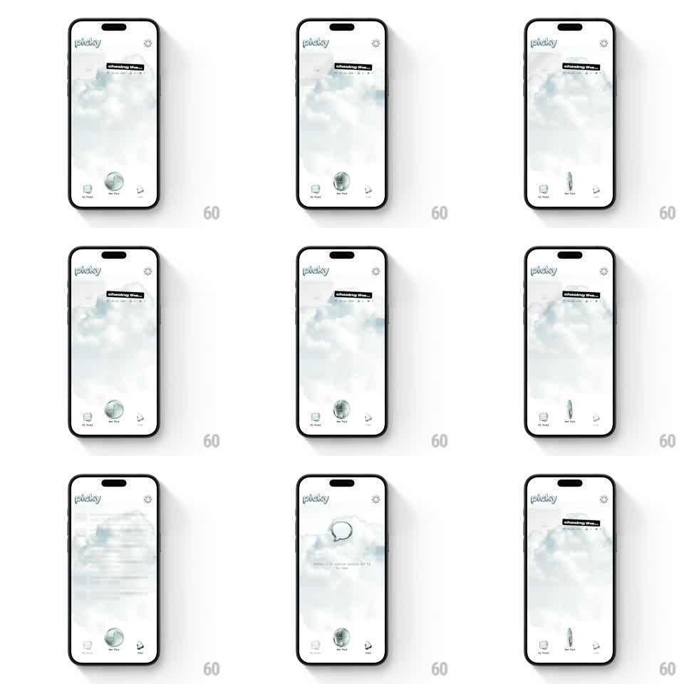

Media
Frame-by-frame

Rebuild this interaction 1:1: Picky's center tab button - tapping the metallic globe button in the middle of the tab bar spins it in 3D like a coin, flipping between its globe face and edge profile while the destination label highlights.

Rebuild this interaction 1:1: Picky's center tab button - tapping the metallic globe button in the middle of the tab bar spins it in 3D like a coin, flipping between its globe face and edge profile while the destination label highlights.
## Integration
Integration: stack-agnostic spec - springs given as stiffness/damping, timed motions as duration + curve; map every value to your framework and animation library of choice.
## Scene
Light, airy screen with a cloudy backdrop, "picky" wordmark top-left, a dark chip pill top-center ("Checking the..."), and a three-item tab bar at the bottom: My Picky, a raised center button (metallic globe, labeled New York), and a paper-plane icon.
## Motion spec
Pattern: 3D coin-spin on tab selection.
- On tap, the center button spins around its vertical axis (rotateY 0 -> 360deg, 600ms, ease-out) with true 3D depth - the globe thins to an edge and back, catching a highlight sweep mid-spin.
- The button lifts slightly during the spin (translate -6px, shadow deepens) and settles back.
- A small bounce ends the spin (scale 1 -> 1.06 -> 1, spring ~340/20, 200ms).
- The tab label under the button crossfades to the selected destination (200ms) as the spin starts.
- Repeating taps retrigger the spin from the current angle; spins queue, never cut.
## Calibration
- The metallic shading is the payoff: a light sweep must travel across the face as it turns.
- The rest of the tab bar stays perfectly still - all playfulness is in the center button.
## Reduced motion
Button crossfades between faces (200ms) with no rotation or lift.
## Don't miss
- The button is a raised floating element, not flush with the tab bar.
- The globe is the resting face; the spin always completes a full turn back to it.